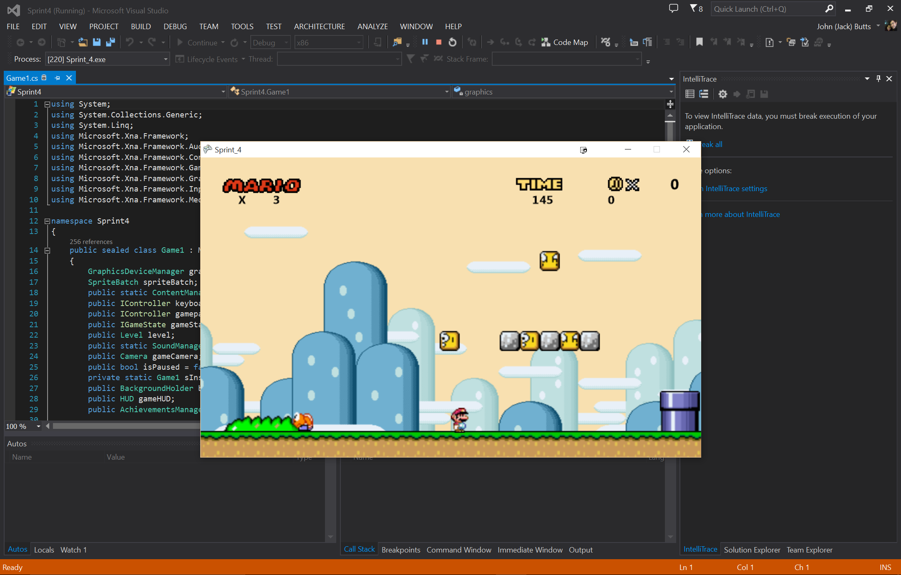
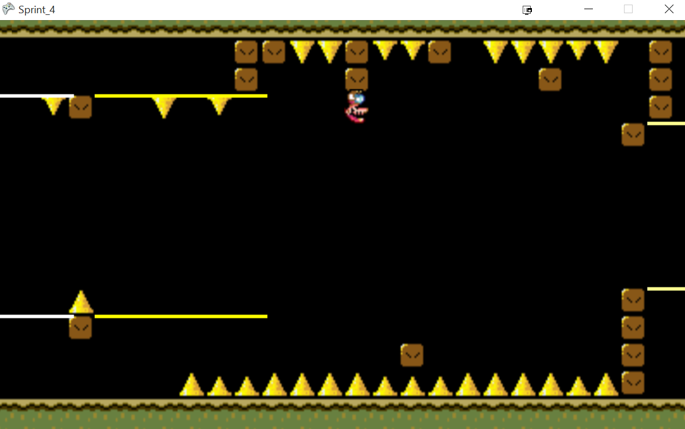
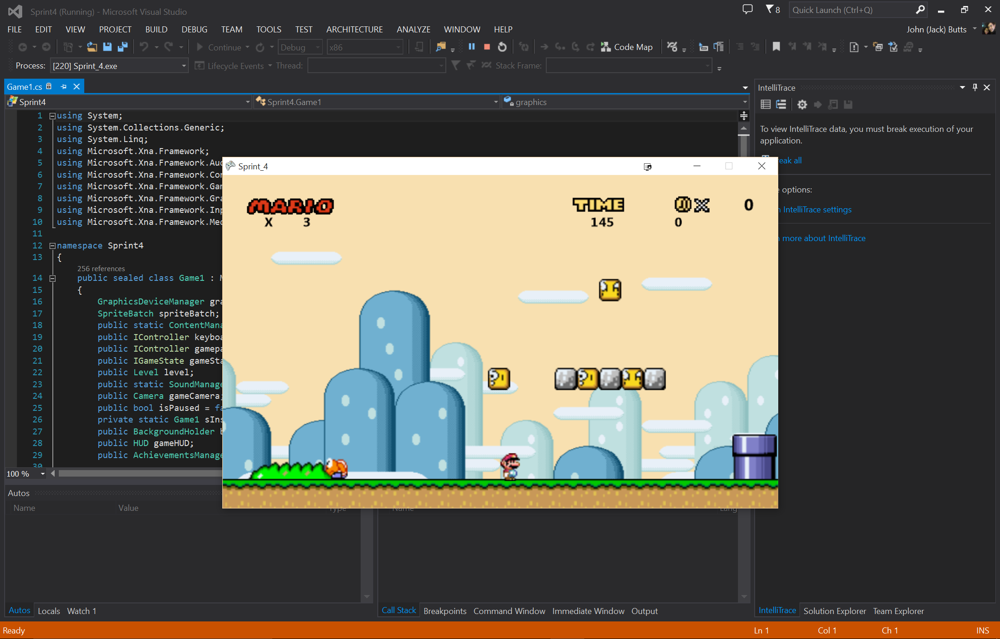
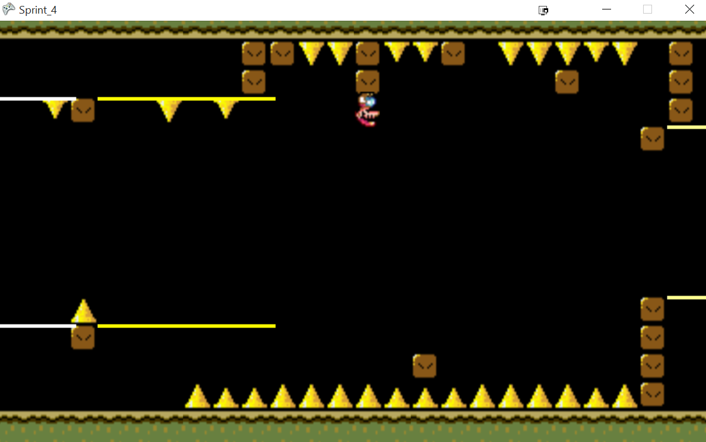
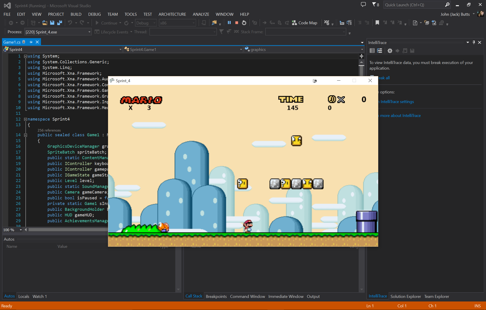
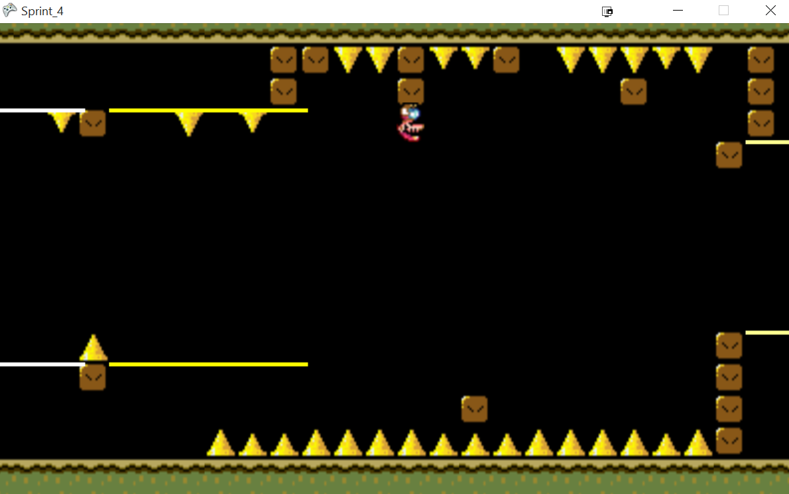
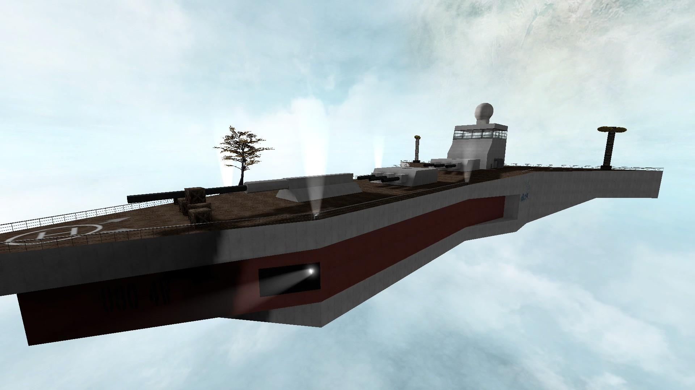
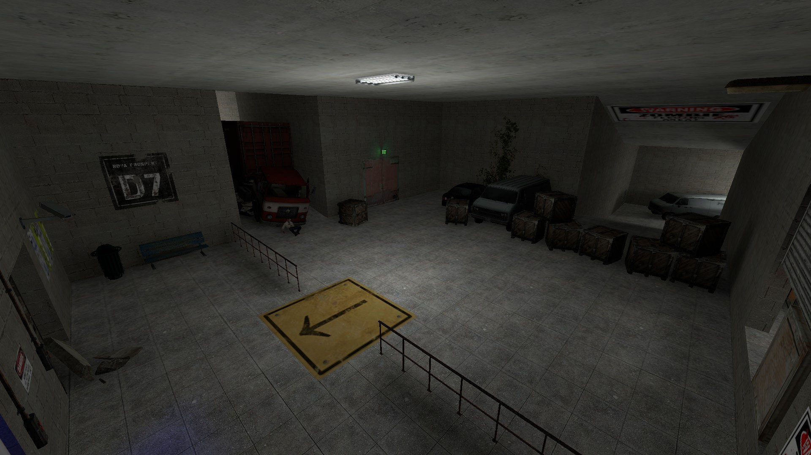
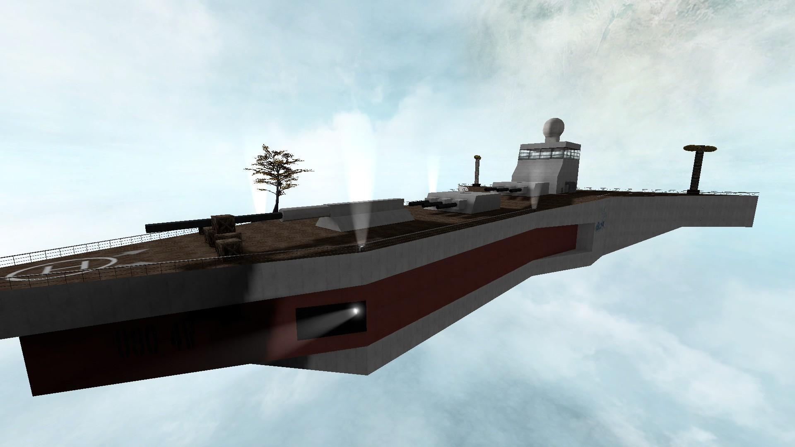
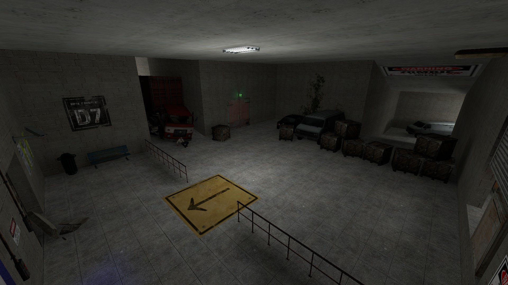

I am a college undergrad studying Computer Science and Engineering at The Ohio State University. I have a passion for design and development of any kind, but am partial towards programming. During my free time I am a gamer and love to play tennis or run.
My top five strengths from the Clifton StrengthsFinder assessment are Analytical, Futuristic, Achiever, Maximizer, and Ideation. My top three strengths define me as developer by my technical mindset, dreamer mentality, and dedication to being a hard worker.
Super Mario World in C#


For my Junior year project course I was asked to design a 2D platformer. Though this was the overarching project, the main goal of the class was to understand the Agile methodology and create readable code.
I took the role of Team Lead for my group and together we designed a replica of the first level of Super Mario World. The game ran through Visual Studio and XNA Game Studio and was programmed in C#.
The final sprint of the project was to add a feature to the game that was not in the original, and my team chose a few. The first was a level following the style of the video game VVVVVV where the player can control gravity for the character. The second was in-game achievements that appear similar to Xbox achievements. Lastly we created a new Mario power-up that turned him into a ninja with throwing stars.
During the summer of 2015 I worked at Nationwide Insurance in their IT department as an automation developer. I mostly wrote scripts in Ruby, but a side project I was assigned was testing the website that would eventually host these automation scripts.
This assignment was what introduced me to Groovy and Grails and how it could design impressive web pages. After about a week of reading the code of a co-worker I had a good understanding of how to design and build websites with Groovy/Grails Tool Suite (GGTS).
I decided at this time to put together a personal website during my free time to show off the work I have done. This current website was made with the HTML code I wrote in GGTS.
My Grails website was designed using Grails 2.4.4, Java Development Kit 1.7 and Twitter Bootstrap 3.2.0
I picked up the hobby of designing maps for video games after the decades of gaming I have exposed myself to. I published a few maps on the modding site GameBanana, but one that I took particular pride in was called GameShow.
The map was designed for the game Counter-Strike: Source. It was used in the custom gamemode called Zombie Escape. The premise of this gamemode is to escape the level without being infected by the zombies. The maps for this gamemode varied greatly and a few were technical feats.
A few smart developers even created boss fights within this gamemode and it became something I had to try. My map was themed around three seperate "escapes" that had to all be beaten in order to fight the final boss.
The map took months of designing and testing before I felt it was ready to be released, and even then I got lots of feedback on how to make it better.
At the time of this writing my map has a 9.67/10 rating on GameBanana with 5,600+ views and 2,700+ individual downloads (not including unrecorded downloads from in-game).
Software used:
Source SDK, Counter-Strike: Source
Date:
Summer 2012
Skill area(s):
Game Design
Custom Shell
For my Introduction to Operating Systems course I was asked to design a simple shell using C programming. The shell accepted user commands that were executed in a child process.
The first part of this assignment was to implement a history command and a few custom commands, like "Run Most Recent (rr)" and "Run Command # (r num)." The max history can also be set with "sethistory #".
The second part of the assignment was to enhance the history feature by making it persistent between sessions. This was done through saving the history with each session to the user's Home directory. I also implemented the ability to change the current directory with the "cd" command.
This side project began by using the Skype API to communicate with my friends in our personal chatrooms. The bot was programmed to respond to various commands starting with "!".
After this I switched to the chat service Discord App. I took most of my old code from the Skype Bot and rewrote it using open source Discord API.
The bot ran through command line, so I needed a server to run without interruption. I chose Amazon's Elastic Compute Cloud (EC2) service so I could run the bot on a free Windows Server.
Using the Monogame framework, I began a small game that would become a clone of the handheld video game Pokemon.
The project made use of a level editor to design custom Pokemon maps, and the creatures themselves are loaded in through .csv files. This allows for customization of any Pokemon or level.
As of now, the game has functioning battles, buildings, NPCs, and level pieces. It is far from a complete experience, but for me I just wanted to challenge myself to implement the basic features of Pokemon.
 



 


